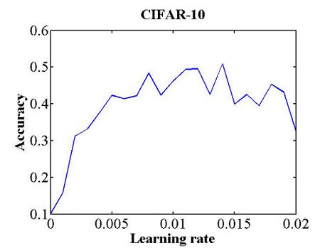
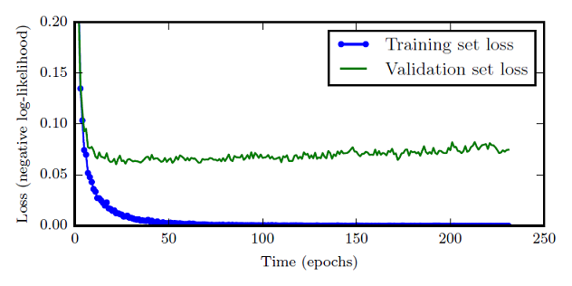

精度问题初步定位指南

本指南旨在为算法开发者提供一个简明扼要的精度问题初步定位指导。完整的精度问题定位和调优方法，请参考精度问题详细定位和调优指南。
本指南适用于训练脚本能够运行到训练结束并输出每个迭代的loss值的情况。若训练中途出现中断训练的报错，则应该首先根据错误提示解决这些报错。
本指南假设读者有能力独立完成深度学习训练脚本的编写，对深度学习、MindSpore有基础的了解。
我们提供两种常见的问题初步定位方法：基于checklist的精度问题初步定位和基于现象对比的精度问题初步定位。实际操作时，一般使用一种方法即可，推荐优先使用基于checklist的精度问题初步定位方法。如果有标杆脚本（指开发MindSpore脚本时参考的脚本），可以考虑基于现象对比的精度问题初步定位方法。
基于问题checklist的精度问题初步定位
当出现精度问题时，您可以参考以下checklist进行检查。若通过checklist发现了可疑的问题，则您应参考精度问题详细定位和调优指南尝试修复这些可疑问题。若checklist使用完毕后，未发现可疑问题，则您应尝试其它精度问题定位和调优手段，或者参考精度问题详细定位和调优指南。如果您怀疑精度问题和MindSpore框架相关，请在向我们求助前确认不存在checklist上列出的问题，求助方法请见本文末尾。
checklist使用说明
建议您将下列checklist全文拷贝到word中，逐项检查，在word中填写检查结论并保存。对于比较复杂的问题，建议您在检查结论后粘贴相关的截图和代码，这些信息可以在您向我们求助时帮助我们更好地判断您的问题。
关于“检查方案”列：您可以根据实际情况选择等效或者效力更强的其它检查方案。
关于“检查结论”列：请根据实际情况从“发现问题”、“无问题”、“不涉及”三个选项中选择填写。
常见数据集问题
ds.01 数据集中缺失值过多
检查方法：
缺失值常常以NaN，+/-Inf等形式存在，不同的数据集中使用的缺失值符号也不尽相同。检查缺失值时，首先明确每个字段使用何种方式表示缺失值，然后使用计数器对每个字段中的缺失值个数进行计数，以此来掌握数据集中缺失值的情况。
若数据中存在未处理的缺失值，则此项的检查结果为“发现问题”，需要采取合适的手段处理（处理手段请参考 精度问题详细定位和调优指南）
检查结论：
请填写
ds.02 数据的标签错误
检查方法：
采用抽样的方法对数据标签是否正确进行检查。无标签的场景（例如无监督学习）无需进行本检查。
若标签不多，建议基于所有的标签对训练数据进行无放回的层次抽样，确保每个标签至少有一个样本入选，然后对入选的样本进行检查。合理选择抽取概率，使得样本量在50个左右。
若标签较多，建议先对标签进行抽样，随机选择20个标签。然后基于所选择的标签对训练数据进行无放回的层次抽样，确保每个标签至少有一个样本入选。合理选择抽取概率，使得样本量在50个左右。
获取完样本后，应采用合适可视化方式检查数据标签是否正确。例如，图像数据可以使用matplotlib绘制出图片后检查，文本数据则可以直接打印到屏幕上进行检查。
检查结论：
请填写
ds.03 数据集每个类别的样本数目不均衡或部分类别训练样本不足
检查方法：
使用计数器对每个类别的样本数目进行计数，然后通过标准差和柱状图等方式判断样本数目是否均衡。一般来说，有监督深度学习算法在每类5000个标注样本的情况下将达到可以接受的精度，当数据集中有1000万个以上的已标注样本时，模型的表现将会超过人类。
检查结论：
请填写
ds.04 训练环境上的数据集同标准数据集不同
检查方法：
建议确认训练环境中拷贝下来的数据集同源数据集一致，特别是在并行训练中，建议确认每台机器上都正确地存储了数据集。使用知名数据集时，应确认训练环境中使用的数据集同知名数据集一致。检查步骤如下：
获取参考训练与实际环境训练的数据集文件列表，确保两个文件列表一致。训练环境中的文件列表应基于真实训练过程记录，例如在训练脚本中创建数据集时记录数据集文件列表。
基于文件列表获取参考数据集文件与实际环境数据集文件的MD5校验码，确保两组校验码一致。
检查结论：
请填写
常见数据处理算法问题
dp.01 未对数据进行归一化或标准化
检查方法：
检查数据处理代码，确认数据处理代码中进行了必要的归一化或标准化调用。归一化或标准化是指将数据映射到同一尺度，常见的操作方法包括Resize、Rescale、Normalize等。
例子：
以ModelZoo的resnet50模型为例，可见其在数据处理代码中进行了归一化，因此检查结果为“无问题”。
trans += [
C.Resize((224, 224)),
C.Rescale(1.0 / 255.0, 0.0),
C.Normalize([0.4914, 0.4822, 0.4465], [0.2023, 0.1994, 0.2010]),
C.HWC2CHW()
]
检查结论：
请填写
dp.02 推理时数据处理方式有误
检查方法：
检查训练脚本的数据处理代码和推理脚本的数据处理代码，两者的处理逻辑一般要保持一致。需要说明的是，一些用于数据增强的随机操作（如随机旋转，随机裁切等）一般只应用在训练集，推理时无需进行随机操作。
例子：
以ModelZoo的resnet50模型为例（cifar10数据集），其训练脚本和推理脚本复用一个数据处理函数，通过do_train参数区分训练模式和推理模式。检查代码可以发现，do_train仅影响两个随机数据处理API，在训练模式时使用，在推理模式下不使用，其余处理逻辑相同。因此检查结果为“无问题”。
if do_train:
trans += [
C.RandomCrop((32, 32), (4, 4, 4, 4)),
C.RandomHorizontalFlip(prob=0.5)
]
检查结论：
请填写
dp.03 训练时没有对数据集进行混洗
检查方法：
检查训练脚本的数据处理代码中是否使能了混洗（shuffle）功能。通过混洗，可以打乱数据顺序，有助于避免过拟合。如果未进行混洗，或者混洗不充分，会导致总是以相同的数据顺序更新模型，严重限制了梯度优化方向的可选择性，导致收敛点的选择空间变少，容易过拟合。混洗功能的常见使能方式有如下几种，使用任意一种方式来使能混洗功能均可：
创建数据集时，指定shuffle参数为True。例如 mindspore.dataset.Cifar10Dataset中的shuffle参数。
在数据处理的过程中，使用shuffle方法，例如mindspore.dataset.Cifar10Dataset.shuffle。
如果使用了Sampler，还可以使能Sampler提供的shuffle功能。例如mindspore.dataset.PKSampler中的shuffle参数。
例子： 以ModelZoo中的resnet50为例（cifar10数据集），其在创建数据集时shuffle参数指定为True，因此检查结果为“无问题”。
if device_num == 1:
data_set = ds.Cifar10Dataset(dataset_path, num_parallel_workers=8, shuffle=True)
else:
data_set = ds.Cifar10Dataset(dataset_path, num_parallel_workers=8, shuffle=True,
num_shards=device_num, shard_id=rank_id)
检查结论：
请填写
dp.04 涉及到数据补齐时，补齐方式错误
检查方法：
检查数据补齐（padding）的位置、方式、值是否同设计一致。数据补齐是指通过填充假数据，使得数据的大小、形状满足训练要求。
检查结论：
请填写
dp.05 并行训练时多节点分片方式错误
检查方法：
多节点数据预处理流程可能存在基于文件名、文件个数等进行分片的模式。该模式下由于文件读取接口在不同节点上对文件名排序的不同，会导致分片差异较大甚至文件重复分片到不同节点等不期望的结果。
检查结论：
请填写
常见超参问题
hp.01 学习率过大或过小
检查方法：
通过一个简单的实验可以初步确定学习率的范围。具体来讲，选定一个足够大的学习率范围（例如从0到0.5），设置训练运行几个epoch（例如10个），在训练运行过程中，逐迭代地线性（或指数）增大学习率，就可以得到一个准确率和学习率的关系曲线，如图。关注曲线中准确率开始上升和不再上升的部分所对应的学习率，可以将准确率开始上升时的学习率当做学习率的下限，将准确率不再上升时的学习率当做学习率的上限，在上下限之间的学习率都可以认为是合理的。

图1 学习率与准确率的关系 此曲线通过8个epoch的训练得到 图片引用自(Smith, 2017)
检查结论：
请填写
hp.02 epoch数目过大或过小
检查方法：
一个epoch是指使用训练集的全部数据将模型训练一次的过程。epoch数目指上面的过程进行了几次。通过训练过程中的训练集loss曲线和测试集loss曲线可以帮助判断合理的epoch数目。一般来说，随着训练进行，训练集上的loss不断减小，而验证集上的loss先下降，后缓慢增加，应选择验证集loss最小时的epoch作为训练的最佳epoch数。

图2 epoch和loss的关系 图中蓝色曲线为训练集上的loss曲线 绿色曲线为验证集上的loss曲线
检查结论：
请填写
hp.03 batch size过大
检查方法：
过大的batch size将会降低准确度。一般来讲，32是一个比较安全的值，64、128、256 也都值得尝试。建议先在较小的batch size和数据集上进行训练，得到准确度的基线。在大batch size的训练中关注准确率的变化情况，如果距离基线较远，说明batch size可能较大（也可能是学习率和batch size不匹配，一般在增大batch size时应同步增大learning rate，使batch size和learning rate的比例保持恒定）。
检查结论：
请填写
常见API使用问题
api.01 使用API时未注意到MindSpore API和其它框架API的差异
检查方法：
MindSpore API同其它框架的API存在一定差异。有标杆脚本的情况下，要特别注意:
MindSpore脚本的参数初始化方式是否同标杆脚本相同
MindSpore中部分API的参数默认值，参数含义同其它框架不同
此处我们列举一些比较重要的差异供大家检查：
MindSpore的Conv2d API，默认没有bias（has_bias=False），而PyTorch的Conv2d API，默认有bias。Conv2d API的weight默认使用 Normal(0.0, 0.01)，这一初始化方式和PyTorch（Uniform）、TensorFlow（Uniform）均不同。与PyTorch的差异对比。
MindSpore的DropOut API，参数含义为保留的概率（keep_prob），而PyTorch的DropOut API，参数含义为丢弃的概率。
MindSpore的BatchNorm2d中的动量默认值和PyTorch不同。PyTorch默认是0.1，MindSpore中默认值是0.9。与PyTorch的差异对比。
较完整的API差异列表请参考 https://www.mindspore.cn/docs/zh-CN/r1.9/note/api_mapping/pytorch_api_mapping.html。
例子：
以ModelZoo中的resnet50为例（cifar10数据集），结合API差异列表可知，此脚本中使用了如下可能存在差异的API：mindspore.nn.Conv2d，mindspore.nn.BatchNorm2d。
逐个确认可知，脚本中使用Conv2d时，显式指定了weight_init方式。脚本中使用BatchNorm2d时，显式指定了momentum参数。这些参数的值和设计相符，因此可以判定“无问题”。
检查结论：
请填写
api.02 使用API时未根据训练/推理场景对应设置模式
检查方法：
训练脚本中，未使用model.train API进行训练时需要进行本检查。
评估脚本中，未使用model.eval API进行评估时需要进行本检查。
推理脚本中，未使用model.predict API进行推理时需要进行本检查。
根据是否为训练场景，在调用模型时提前设置cell.set_train()。若为训练场景，应该先调用 cell.set_train(True)，其它场景，则应该先调用cell.set_train(False)。
备注：
对于mindspore.nn名称空间下的BatchNorm系列API，建议您保持参数use_batch_statistics为默认值None。当use_batch_statistics为默认值None时，BatchNormAPI会根据cell.set_train()所给定的模式决定每个迭代中是否更新moving mean和moving variance参数：在cell.set_train()所给定的模式为True时更新上述两个参数，在cell.set_train()所给定的模式为False时不对上述两个参数进行更新。若设置了use_batch_statistics=True，即使设置了cell.set_train(False)以表示当前处于非训练场景，BatchNormAPI仍然会更新moving mean和moving variance参数。
例子：
以ModelZoo中的resnet50为例（cifar10数据集），其在train.py和eval.py中分别使用的model.train和model.eval API进行训练和推理，在infer.py中，其在推理前显式调用net.set_train（False），因此检查结果为“无问题”。
检查结论：
请填写
常见计算图结构问题
为了检查计算图结构问题，请读者首先参考收集Summary数据，将计算图保存到summary文件中，然后使用MindInsight可视化查看计算图。
检查结论：
请填写
cg.01 权重共享错误
检查方法：
权重共享错误，是指应该共享的权重未共享，或者不应该共享的权重共享了。在MindInsight计算图页面对感兴趣的权重进行抽检，选中权重节点，根据权重节点的输出节点可以判断权重是否被共享，观察输出节点的名称，可以得知输出节点大致对应的代码。节点名称以Default开头的，一般为正向图中的节点，需要重点关注。节点名称以Gradients开头或者含有optimizer的，一般为反向图或者优化器相关的节点，检查时可以忽略。例如，要检查Conv2d的权重，可以在计算图页面右上角的搜索框中键入conv2d，然后选择任意感兴趣的conv2d节点，接着找到该节点的输入权重节点，即可对该权重节点进行检查。
检查结论：
请填写
cg.02 权重冻结错误
检查方法：
对照代码检查权重的冻结情况是否同设计一致。有两种方法可以冻结权重，这两种方法在代码中都具有明显的特征。
方法一：设置Parameter的requires_grad参数为False。
方法二：使用stop_gradient阻止梯度继续向后传播，阻止所有会影响权重的梯度后，该权重的更新也就事实上被阻止了。
检查结论：
请填写
cg.03 节点连接错误
检查方法：
在MindInsight计算图页面自顶向下地对重要的模型元素进行检查，确保这些元素体现在了计算图中。例如，检查LeNet5是否存在节点连接错误时，可以逐层展开MindInsight计算图页面显示的计算图，确认conv、relu、fc等重要元素存在于计算图中，并且连接正确。Gradients命名空间下的计算图为MindSpore自动微分生成，检查时可以忽略。
检查结论：
请填写
cg.04 loss函数有误
检查方法：
使用MindSpore内置loss函数时，应检查使用的loss函数种类是否同设计相符。使用自定义loss函数时，应检查loss函数的代码实现是否和设计相符，必要时可以手动实现一个numpy版本，使用相同输入对比MindSpore版本的loss函数和numpy版本的loss函数输出是否一致。
检查结论：
请填写
常见权重初始化问题
wi.01 权重初始值全部为0
检查方法：
检查脚本中的权重（不含优化器中的状态）初始化方式（包括显式指定的权重初始值和部分mindspore.nn命名空间下API中默认初始化的权重），是否有将权重初始化为全零的情况。需要注意的是，部分参数，例如bias，初始化为全0是正确的。
检查结论：
请填写
wi.02 加载的预训练模型不正确
检查方法：
加载预训练模型/骨干模型时，要确保加载了正确的权重。当使用resnet等骨干模型时，要注意加载同设计相符，匹配使用场景的预训练模型。有标杆脚本时，要确保加载的预训练模型和标杆脚本能使用的预训练模型有相同的权重值。
检查结论：
请填写
常见混合精度和溢出问题
当您在Ascend后端上运行脚本时，或者使用了混合精度功能时，建议您参考本节中的检查项进行检查，以确认是否存在混合精度及溢出问题。
mp.01 训练中存在溢出问题
检查方法： 当使用混合精度训练，或者是使用Ascend AI处理器训练时，建议检查是否存在溢出问题。
使用GPU时，通过调试器中的“检查张量溢出”监测点可以进行溢出检查。
发现溢出问题后，应首先找到并分析第一个出现溢出的节点（对于Ascend的溢出数据，可以按文件名中的时间戳，找时间戳最小的一个；对于GPU上的溢出，只要找执行序中最靠前的一个），结合API的输入输出数据确定溢出原因。
出现溢出问题后常见的解决措施如下：
使能动态loss scale功能，或者是合理设置静态loss scale的值，请参考LossScale。需要注意的是，直接将GPU场景中的静态loss scale用于Ascend上的训练时，可能会导致不期望的频繁溢出，影响收敛。loss scale使能后，可能需要多次实验以调整loss scale的初始值init_loss_scale、调整比例scale_factor、调整窗口scale_window等参数，直到训练中浮点溢出非常少，请参考DynamicLossScaleManager以了解这些参数的含义。
溢出问题对精度有关键影响且无法规避的，将相应的API调整为FP32 API（调整后可能对性能有较大影响）。
检查结论：
请填写
mp.02 混合精度训练时，未正确设置loss scale
检查方法：
在使用混合精度时，一般应确认使能了DynamicLossScaleManager或FixedLossScaleManager，推荐优先使用DynamicLossScaleManager。可以先使用DynamicLossScaleManager或FixedLossScaleManager的默认参数值进行训练，若产生溢出的迭代过多，影响最终精度时，应根据主要的溢出现象，针对性调整loss_scale的值。当主要溢出现象为梯度上溢时，应减小loss_scale的值（可以尝试将原loss_scale值除以2）；当主要溢出现象为梯度下溢时，应增大loss_scale的值（可以尝试将原loss_scale值乘以2）。对于Ascend AI处理器上的训练，其在大部分情况下为混合精度训练。由于Ascend AI处理器计算特性与GPU混合精度计算特性存在差异，LossScaleManager超参也可能需要根据训练情况调整为与GPU上不同的值以保证精度。
检查结论：
请填写
mp.03 loss scale和梯度裁剪的应用顺序不正确
检查方法：
梯度裁剪（gradient clip）是指当梯度大于某个阈值时，强制调整梯度使其变小的技术。梯度裁剪对RNN网络中的梯度爆炸问题有较好的效果。如果同时使用了loss scale和梯度裁剪，需要进行本检查。请对照代码检查确认梯度裁剪的应用对象是除以loss scale后得到的原始梯度值。
检查结论：
请填写
mp.04 计算梯度惩罚时，没有先将梯度恢复为无loss scale的梯度
检查方法：
梯度惩罚是指将梯度添加到代价函数中，约束梯度长度的技术。如果同时使用了loss scale和梯度惩罚（gradient penalty），需要进行本检查。检查确认计算梯度惩罚项时，输入的梯度为无loss scale的梯度。例如，可以先将代用loss scale的梯度除以loss scale，再用来计算梯度惩罚项。
检查结论：
请填写
基于现象对比的精度问题初步定位
在脚本、超参、数据集未修改的情况下，若版本升级后在新版本上多次运行完全相同的脚本均存在明显的精度劣化（相较于旧版本），请向我们求助并提供相关信息。
有其它框架下的标杆脚本时，可以通过对比MindSpore脚本和标杆脚本的现象来初步定位精度问题。标杆脚本是指，开发MindSpore脚本时镜像参考的脚本，也即，MindSpore脚本中的绝大多数细节由标杆脚本决定。迁移场景中，被迁移的脚本一般是标杆脚本。
本方法操作步骤如下：
固定MindSpore脚本随机性
复现精度问题
固定随机性后，应首先检查精度问题是否复现。
若问题不再复现，说明精度问题和固定随机性时所作的操作有关，依照不固定网络、不固定数据集、不固定初始化权重、不固定超参、不固定全局随机数种子的顺序尝试，可以确定哪个操作导致问题不在复现，从而判断问题原因，并针对性优化训练脚本。
若问题在随机step偶现、或是在确定step偶现、或是在随机step必现。结合上面步骤中loss曲线在多次运行时一致的检查结果，应再次检查确认是否所有随机因素都固定了。
若问题在确定迭代必现，为方便后续现象对比和问题定位，可以尝试将问题提前到第一个或第二个step出现。具体来讲，假设问题在第D个迭代出现，则应设法保存第D-1个迭代的checkpoint，记为checkpoint（D-1），并设置数据集skip对应的数据，然后加载checkpoint（D-1）运行训练，此时问题应在第二个迭代出现（初始迭代记为第一个迭代）。
同标杆脚本对比
同标杆脚本对比，是对定位精度问题具有极大帮助的一步。这一步中，需要将MindSpore脚本和标杆脚本进行全面彻底的对比，一个目的是检查MindSpore脚本中是否存在错误，另一个目的是固定标杆脚本的随机性，以便同MindSpore脚本对比loss曲线。
建议采用模拟执行，逐行对比的方式做检查。想象以相同的参数分别执行训练脚本，执行时确认MindSpore脚本和标杆脚本的逻辑一致，运行参数含义匹配，确认的范围一般局限在开发者自己编写的代码即可（深度学习框架本身的代码可以不打开）。在这个执行过程中，着重关注以下部分：
确认标杆脚本中各种全局随机数种子已固定。
对比超参是否一致，并固定标杆脚本中的超参。
对比数据集和数据处理是否一致，并固定标杆脚本中的数据处理方法和数据顺序。
对比网络结构是否一致，并删除网络中带有随机性的API。
对比权重初始化是否一致。建议MindSpore脚本和标杆脚本加载具有相同值的checkpoint文件。网络结构一致的情况下，一般通过简单的权重名称替换即可将一个框架的checkpoint文件转换为另一个框架的checkpoint文件。
强烈建议在标杆脚本中使能混合精度。若标杆脚本使能混合精度后出现精度问题，则需要优化算法以使算法能够正常在混合精度下收敛。
在对比的过程中，除了要对比脚本中写出来的参数，还要注意未写在脚本中的参数默认值。例如，MindSpore的Conv2d API，默认has_bias为False，使用Normal(0.0, 0.01)进行权重初始化，而PyTorch的Conv2d API，默认has_bias为True，初始化方式也不同。MindSpore与PyTorch的详细API差异请见 https://www.mindspore.cn/docs/zh-CN/r1.9/note/api_mapping/pytorch_api_mapping.html。
执行完上述对比和固定流程后，一般会发现若干MindSpore脚本中的不一致，修复这些不一致后，往往精度问题就解决了。若不一致之处都修复了，问题仍然存在，可以使用相同的数据集和参数分别运行MindSpore脚本和标杆脚本，对比两者的loss：
若第一个迭代的loss不同，说明两个脚本可能还存在不一致，或者是未固定的随机性。
若第一个迭代的loss相同，第二个迭代的loss不同，说明在第一个迭代的反向计算或权重更新，或是在第二个迭代的正向计算中出现了不一致。需要您检查MindSpore脚本和标杆脚本的优化器、输入数据等是否一致。如果检查确认MindSpore脚本和标杆脚本一致，随机性都已固定，请收集相关信息向我们求助 。
若第一个和第二个迭代的loss值均相同，则可以更进一步对比整条loss曲线。如果整条loss曲线基本一致，则说明标杆脚本大概率也存在精度问题，如果整条loss曲线出现了分叉，则分叉的位置是定位精度问题的关键。
需要特别说明的是，由于Ascend上部分API没有FP32实现，在同Ascend上的MindSpore对比时，标杆脚本也应使能混合精度 ，以确定开启混合精度情况下的精度上限。
求助方式
参考上面两种初步定位方法的任意一种进行操作。若未发现可疑点，一般说明脚本不存在明显的问题，此时请参考精度调优建议进行调优。若使用基于现象对比的定位方法发现了疑点，请依据定位方法中的提示判断是需要自行定位的问题还是向MindSpore求助。若使用checklist发现了疑点或问题，请参考精度问题详细定位和调优指南进行详细定位。
当您遇到精度问题，要向MindSpore求助时，提供相关材料将有助于我们更好地判断和解决您的问题。建议您提供的材料包括但不限于：
若您使用了checklist，则建议您将checklist的检查结果添加到附件中。
若您使用了基于现象对比的初步定位方法，则建议您将现象截图（包括MindSpore脚本和标杆脚本），固定完随机性后的MindSpore脚本和标杆脚本，以及复现问题所需的最小数据集和运行环境说明（例如MindSpore版本、在GPU还是Ascend上执行）等添加到附件中。
始终建议您将能够复现问题的可运行脚本、最小数据集、运行环境说明（例如MindSpore版本、在GPU还是Ascend上执行）等添加到附件中。
参考文献
Smith, L. N. (2017). Cyclical learning rates for training neural networks. Proceedings - 2017 IEEE Winter Conference on Applications of Computer Vision, WACV 2017, 464–472. https://doi.org/10.1109/WACV.2017.58